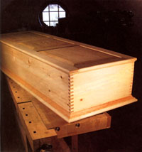
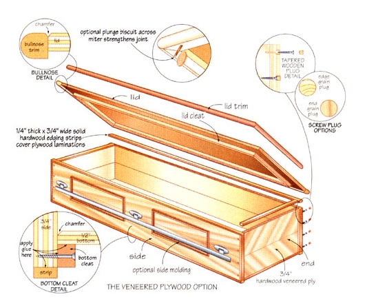
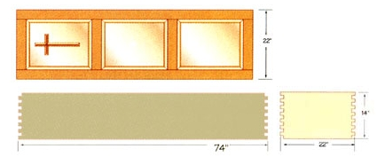
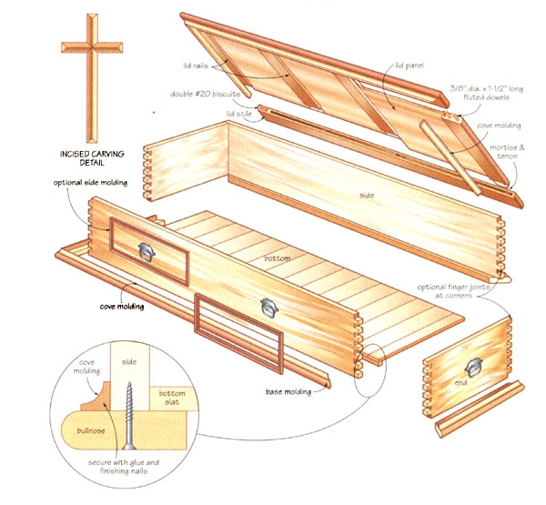

Back in 1995, I attended the funeral of a well-loved gentleman who spent his 85-plus years living in the same modest country home where he grew up. He was a craftsman, skilled with wood, stone and soil, frugal as old-timers often are and simple in his tastes. But when I went to pay my last respects, I thought I'd somehow walked into the wrong funeral parlor. His coffin was huge, streamlined, made of shiny blue fiberglass and sporting more-than-ample fake gold hardware. It looked like something designed in a NASA wind tunnel. I learned later that this space-pod-to-eternity had cost $5,000, and that was the biggest shock of all. I couldn't have been any more surprised if my old friend had leaped out of the coffin wearing a silver jumpsuit and sequined go-go boots.
But coffins don't have to contradict the life of the person whose body they contain. You can make a wooden coffin yourself (or hire a woodworker) - it’s really very easy. Besides saving a bundle of money, making a coffin can reflect and celebrate the life of a specific person, providing a reminder of happy things at a time when sadness holds the upper hand. The best coffins are joyful epitaphs in wood. Several coffin plans exist in the image gallery to help get you started on making a homemade casket.
Advanced woodworkers may want to build a coffin from solid wood, and the drawings in the image gallery show you how to proceed. But if you don't have the tools or advanced skills to build the solid wood casket, you can use hardwood veneer plywood, following the same coffin plans. Regardless of the approach you choose, building a coffin is engaging, well within the reach of those with moderate skills, and a great way to be reminded of the need to live well now. Take it from me, there's nothing like building your own casket to be powerfully reminded of your own mortality.
I'm focusing on coffin plans with hardwood veneered plywood for two reasons. First, it makes this project easier than using solid wood, opening the handmade coffin option to more people. It also eliminates the need for equipment-intensive operations like milling and edge-gluing, while making the most frugal use of high-grade hardwood forest resources. Veneered plywood also is widely available and economical compared to many sources of solid wood.
If you build a coffin for a particular person, make the inside dimensions about 4 inches wider than the shoulder span and 5 inches longer than standing height.
Hardwood veneered plywood is made of thin slices of wood, including oak, maple, birch, ash or cherry, that are factory-glued to a softwood plywood substrate. The product comes in 4-foot-by-8-foot sheets; you'll want to use panels that are 3/4-inch thick.
The first thing to consider when making a coffin is material choice. Besides selecting a species of hardwood veneer, you also need to think about veneer orientation. The casket plans show what's called a "book matched" veneer pattern. Neighboring pieces of veneer are mirror images of each other, glued to the plywood substrate side-by-side. Other options include slip-matched veneer (adjoining pieces oriented in a repeating pattern), as well as random veneer orientations. Although most lumber suppliers stock some kind of hardwood veneered plywood, you'll probably need to special order the particular grade, species and veneer style you want to make the coffin with. Leave yourself time for this.
While you're at the lumber store, buy some matching veneer edging tape or 3/4-inch-thick hardwood planks for making edging strips and lid trim. Plywood edges should be capped with solid wood.
Veneer tape comes in rolls that you cut to length and then glue onto the edges. Solid wood edging strips are slightly more trouble to install but absolutely reliable.
Building the veneered plywood coffin involves five simple steps: cutting the sides, ends and lid parts; applying veneer tape or hardwood strips to all exposed edges; joining the sides and ends into a box; cutting and installing the bottom; then applying a protective finish. The difference between a good coffin and a great one hinges on specific tricks you need to know at each stage, and the most important involves basic cutting skills.
Despite the advantages, veneered plywood has one main weak point: The thin surface layer of wood is prone to splintering if it's not cut with the right kind of circular saw blade. You can't expect good results using the standard blades that come with most saws. Instead, look for blades made especially for cutting veneered plywood or melamine-coated sheet goods.
You'll get the best performance if you put one of these on a table saw, though that's not absolutely necessary. I know a professional cabinetmaker who built more than 300 projects for publication during a 20-year period, all without access to a table saw. He used a handheld circular saw instead, following a straight edge, to flawlessly cut all parts, including acres of veneered plywood.
Make a few practice cuts, then prepare the coffin sides, ends and lid parts. Wait until later to cut the bottom. You'll get more accurate results if you cut it to fit within the assembled coffin.
(You can skip this section if you use glue-on veneer tape.) There are two kinds of solid wood edges involved in this project: 1/4-inch-thick by 3/4-inch-strips for the sides and ends, and 1 1/4-inch-thick by 1 1/4-inch-wide bulldoze (rounded edges) strips to frame the lid of the coffin. In both cases, success depends on two things: accurately cut strips and a smooth strip-to-veneer glue joint.
Make the strips about 1/32-inch wider than the actual thickness of the 3/4-inch plywood. And hold them in place with masking tape if you don't have enough large clamps. Just keep one thing in mind: The excess strip width must extend over both faces of the plywood, creating a slight lip where the two meet. By making the solid wood strip wider than the plywood thickness, you lay the foundation for a smoothly sanded joint.
Let the strips dry overnight, then sand them flush with the plywood using a gently guided belt sander with a 120-grit belt or a random orbit sander with a 100-grit disc.
As you work, remember the veneer next to the solid wood strips is very thin - less than 1/32 inch. Ugly wood and glue lurks underneath, so sand gently. If you wear through the veneer, you'll ruin the whole piece.
There are several ways to connect the sides and ends of a veneered plywood casket. You can use 3/8-inch-diameter by 1 1/2- fluted dowels, No. 20 biscuits or the plug-covered screws shown on the coffin plans. Screws are especially attractive for three reasons: They don't demand special equipment to install; they act as their own clamps by drawing the sides and ends together; and they are ideal for caskets destined to be shipped or stored unassembled. Few people have the space to conveniently store a full-size casket, but the individual parts are easy to tuck away on a shelf or in a closet. The coffin plans show the two kinds of tapered plugs you'll find at woodworking supply outlets: edge-grain and end-grain. Choose end-grain when you want the plugs to stand out and edge-grain when you want them to blend in.
Immediately after bringing the sides and ends together, check that the overall assembly of the coffin is square. Although you could use a framing square for this job, a better option involves equalizing diagonal measurements. Measure diagonally opposite corners, then push or pull the assembled structure as needed to bring them within 1/8 inch of each other.
Screw the sides together temporarily, and measure and cut the 1/2-inch plywood bottom. Then glue and screw the sides together, and drop the bottom into the coffin before setting it aside to dry.
You can lift the bottom of the coffin out later for finishing, though having the bottom in place at this stage ensures the homemade casket stays square while it dries.
Moldings make an enormous difference to the look of any do-it-yourself casket, and you'll see a few options on the coffin plans. As a general rule, put the largest moldings along the bottom, smaller moldings under and around the lid, and the smallest profiles simulating frames on the sides and lid of the coffin. Using trim frames in this way is especially valuable with veneered plywood construction. The veneers are typically so perfect that they can look boring. Frames easily add visual interest to a handmade coffin.
Personalizing your coffin is one advantage of the handmade option. Two possibilities are incised carving and laser engraving. Create a design or initials on a computer, then print them out. Use rubber cement to glue the printed paper to your wooden coffin, then carve right through the pattern into the surface using a sharp chisel or chip-carving knife. If you want something even easier, you can find businesses offering laser engraving services. The inscription on the underside of my coffin lid was designed and produced 300 miles from my shop, then shipped to me for lamination with existing wood parts. The only hitch with incised carving is that it has to be done on solid wood. Hardwood veneered plywood, however, takes laser engraving very well.
There are many ways to finish wood, but a penetrating oil or a wiping-grade urethane makes a lot of sense with this project. I used Minwax Wipe-On Poly, though polymerized tung oil or Danish oil works well, too. Just slather some on, then wipe off the excess after 10 minutes. Let it dry 24 hours, then repeat the procedure three or four times and you are done.
You can add custom cushions to the interior when you make your own coffin, or maybe simply wrap a favorite quilt around some bed pillows.
If you have the skills, tools and inclination to build a solid wood coffin like I did, then you probably don't need me to tell you how. What might be less clear is how to make a more direct connection to the forest by selecting and air-drying your own lumber. That's a specialty of mine, a technique I learned when I began buying wood directly from small country sawmills back in the early 1980s. Building with this lumber saves money and yields better material to make a coffin.
What surprises some folks is that you don't need a kiln to prepare wood that's dry enough for reliable use indoors. And the drying process doesn't even take that long. I select logs and have them cut into boards 1 to 3 inches thick. Immediately after sawing I stack the boards in the shade (though not in a building), with spacers between each layer. That's where the wood sits for six to eight weeks during the spring, summer or fall while moisture content drops to about 14 percent. At this state, the wood is dry enough for rough cutting, but not yet ready for final fitting.
After sawing to length and width, I smooth boards using a bench-top thickness planer (you could have this done at a sawmill), bringing them down to 1/8 inch thicker than final size before restacking the wood indoors for final air drying.
Three or four weeks of heated indoor storage brings 1-inch-thick softwoods down to the 7 percent to 9 percent moisture content required for fine work.
Dense hardwoods and thicker softwoods might take three or four additional weeks. By stacking the lumber with spacers between the layers, you'll get excellent and speedy results. A household fan aimed at the pile helps hurry things along.
|
 BY LEN CHURCHILL Author Steve Maxwell personalized the casket he made for himself with this laser-engraved inscription. Right: Details also can be hand carved into the wood. |
BY LEN CHURCHILL Click here for a downloadable enlargement of this illustration. |
 BY LEN CHURCHILL Click here for a downloadable enlargement of this illustration. |
|
 |
 |
|